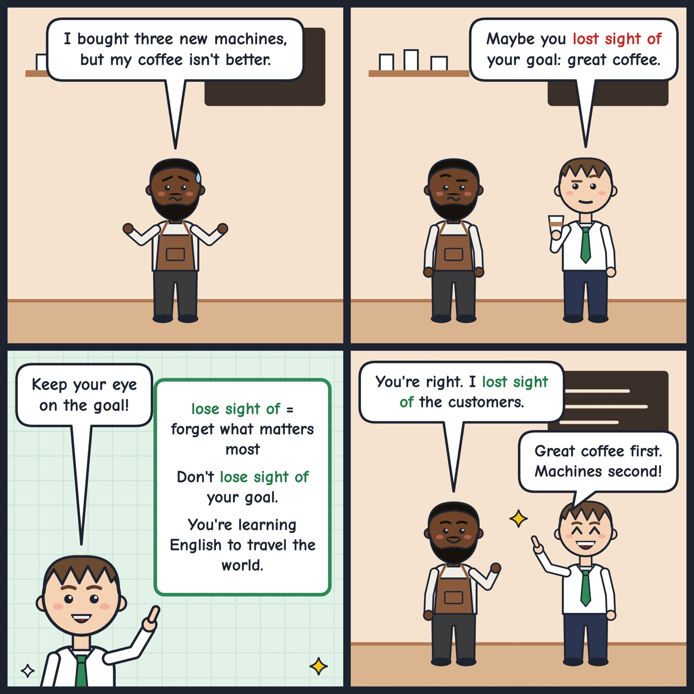

lose sight of
To forget or stop thinking about what is most important.
Don't lose sight of your goal. You're learning English to travel the world.
'Lose sight of something' means to forget or ignore the most important thing.

Your turn
What goal do you never want to lose sight of?
What goal do you never want to lose sight of?